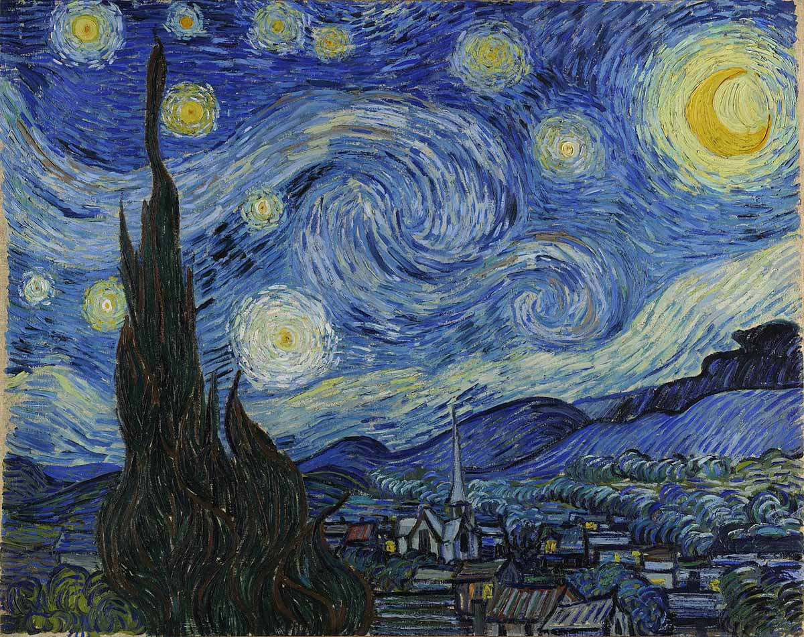

One of the world's best known artists, Van Gogh's works of art are spread across several important museums. To see more works by Van Gogh, one of the best destinations in the world is Amsterdam, home to the Van Gogh Museum. The museum houses the artist's largest collection and you can see works of art such as The Bedroom (1888), Sunflowers (1889), various self-portraits and more.

The Starry Night - Year 1889
The Persistence of Memory - Year 1931
Salvador Dalí is one of the undisputed masters of surrealism, demonstrated not only through works like The Persistence of Memory but also through his flamboyant, colorful personality. The Persistence of Memory is one of his most beloved paintings, with surrealist imagery that would become part of Dalí’s legacy as an artist. This masterpiece is on display at New York's Museum of Modern Art – MoMA.
The Great Wave off Kanagawa - Year 1831
This famous woodblock print by the Japanese ukiyo-e artist Hokusai depicts an enormous wave threatening boats off the coast of Kanagawa. It is Hokusai's most famous work and one of the most recognizable works of Japanese art in the world.